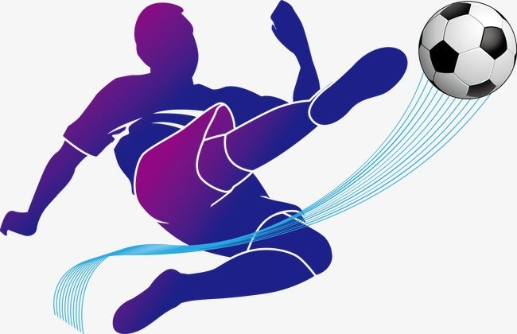
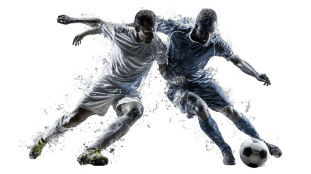
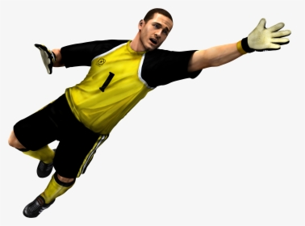

El fútbol moderno nació en Inglaterra en el siglo XIX, cuando diferentes escuelas y clubes jugaban con reglas distintas. Para unificar el juego, en 1863 se creó la The Football Association, que estableció normas oficiales como la prohibición de usar las manos (excepto el portero). Aunque este es el origen formal, existen antecedentes muy antiguos como el “cuju” en China o juegos de pelota en Mesoamérica. Con la expansión del Imperio Británico, el fútbol se difundió rápidamente por Europa, América y otras regiones, convirtiéndose en un fenómeno global. En el siglo XX, la creación de torneos internacionales consolidó su importancia.
El fútbol se juega entre dos equipos de 11 jugadores en un campo rectangular con césped natural o artificial. El objetivo principal es marcar más goles que el rival durante los 90 minutos de juego. El balón debe moverse principalmente con los pies, aunque también se puede usar la cabeza y el torso. El portero es el único jugador que puede usar las manos, pero solo dentro de su área. Existen reglas importantes como el fuera de juego, que evita que los jugadores se queden esperando cerca de la portería rival sin participar en la jugada. Las faltas se sancionan con tiros libres o penales, y las infracciones graves pueden castigarse con tarjetas amarillas o rojas, lo que añade disciplina al juego.

Los fundamentos técnicos son la base del rendimiento de cualquier jugador. El control del balón permite recibir pases sin perder la posesión, lo cual es clave en partidos rápidos. El pase, por su parte, es esencial para construir jugadas colectivas, y puede variar en precisión, fuerza y dirección. El tiro requiere técnica y potencia, ya que no solo se trata de disparar fuerte, sino también con colocación y decisión. El regate es una de las habilidades más llamativas, ya que permite superar rivales en situaciones uno contra uno. Finalmente, la defensa implica anticipación, posicionamiento y capacidad de recuperación del balón sin cometer faltas.
Cada posición tiene responsabilidades específicas que contribuyen al funcionamiento del equipo. El portero es la última línea de defensa y necesita reflejos rápidos y buena lectura del juego. Los defensas se encargan de proteger su área y evitar goles, mientras que los centrocampistas son el “motor” del equipo, conectando la defensa con el ataque. Los delanteros tienen la tarea principal de marcar goles y aprovechar oportunidades. Las formaciones tácticas como 4-3-3 o 4-4-2 determinan cómo se distribuyen estos jugadores en el campo, influyendo directamente en el estilo de juego.

El fútbol es mucho más que un deporte; es un fenómeno cultural que une a personas de diferentes países, idiomas y culturas. Se juega tanto en estadios profesionales como en calles y comunidades rurales. Grandes eventos como la Copa Mundial de la FIFA generan audiencias de miles de millones de personas, convirtiéndose en uno de los espectáculos más vistos del planeta. Además, el fútbol tiene un fuerte impacto social, promoviendo valores como el trabajo en equipo y la inclusión.
El fútbol cuenta con una gran variedad de torneos a nivel mundial. El más importante es la Copa Mundial de la FIFA, que se celebra cada cuatro años y reúne a las mejores selecciones del mundo. A nivel de clubes, la UEFA Champions League es la competición más prestigiosa, donde participan los mejores equipos de Europa. También destacan ligas nacionales como la Premier League y la La Liga, conocidas por su alto nivel competitivo.

A lo largo de la historia, muchos jugadores han dejado una huella imborrable en el fútbol. Pelé revolucionó el deporte con su talento y logró ganar tres Copas del Mundo. Diego Maradona es recordado por su habilidad extraordinaria y momentos históricos como el “Gol del Siglo”. En la era moderna, Lionel Messi y Cristiano Ronaldo han dominado el fútbol mundial durante más de una década, destacando por su consistencia, récords y rivalidad.